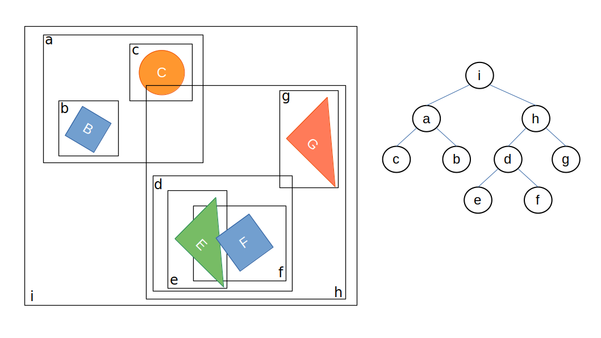

Dynamic Tree
The dynamic tree holds instances which implement the IDynamicTreeProxy interface.
Its main task is to efficiently determine if a proxy's axis-aligned bounding box overlaps with the axis-aligned bounding box of any other proxy in the world.
A naive implementation requires \(\mathcal{O}\left(n\right)\) operations (checking for an overlap with every of the \(n-1\) entities).
The tree structure accelerates this to \(\mathcal{O}\left(\mathrm{log}(n)\right)\).
Since proxies are dynamic and can move, the tree must be continuously updated.
To trigger updates less frequently, entities are enclosed within slightly larger bounding boxes than their actual size.
This bounding box extension is defined by the Velocity property of the IDynamicTreeProxy interface.

Adding proxies
All shapes added to a rigid body (body.AddShape) are automatically registered with world.DynamicTree.
Custom implementations of IDynamicTreeProxy can be added to the tree using tree.AddProxy.
In this case, a BroadPhaseFilter must be implemented and registered (using world.BroadPhaseFilter) to handle collisions with the custom proxy, otherwise an InvalidCollisionTypeException is thrown.
Enumerate Overlaps
The tree implementation needs to be updated using tree.Update.
This is done automatically for the dynamic tree owned by the world class (world.DynamicTree).
Internally, UpdateWorldBoundingBox is called for active proxies implementing the IUpdatableBoundingBox interface, and the internal book-keeping of overlapping pairs is updated.
Overlaps can be queried using tree.EnumerateOverlaps.
Querying the tree
The dynamic tree is a broadphase structure. Its job is to quickly reduce the set of possible candidates. Some APIs stop there and return proxies, while others continue with an exact narrowphase test.
In practice there are two layers of queries:
- Broadphase-only queries, such as
Query(...), which return candidate proxies. - Broadphase + narrowphase queries, such as
RayCast(...),SweepCast(...), andFindNearest(...), which continue with exact tests on supported proxies.
Broadphase-only queries
All tree proxies that overlap a given axis-aligned box can be queried:
public void Query<T>(T hits, in JBoundingBox box) where T : class, ICollection<IDynamicTreeProxy>
public void Query<TSink>(ref TSink hits, in JBoundingBox box) where TSink : ISink<IDynamicTreeProxy>
As well as all proxies which overlap with a ray:
public void Query<T>(T hits, in JVector rayOrigin, in JVector rayDirection) where T : class, ICollection<IDynamicTreeProxy>
public void Query<TSink>(ref TSink hits, in JVector rayOrigin, in JVector rayDirection) where TSink : ISink<IDynamicTreeProxy>
Custom broadphase queries can easily be implemented. An implementation which queries all proxies overlapping with a single point:
var stack = new Stack<int>();
stack.Push(tree.Root);
ReadOnlySpan<DynamicTree.Node> nodes = tree.Nodes;
while (stack.TryPop(out int id))
{
ref readonly DynamicTree.Node node = ref nodes[id];
if (node.ExpandedBox.Contains(point))
{
if (node.IsLeaf)
{
Console.WriteLine($'{node.Proxy} contains {point}.');
}
else
{
stack.Push(node.Left);
stack.Push(node.Right);
}
}
}
Exact query helpers
The tree also provides helpers that combine broadphase pruning with an exact narrowphase test.
These return the closest exact hit instead of raw candidate proxies.
All exact query helpers return true on success and false when nothing is found.
Ray casting
All proxies implementing IRayCastable can be ray cast, including all shapes:
// Unbounded
public bool RayCast(JVector origin, JVector direction, RayCastFilterPre? pre, RayCastFilterPost? post,
out IDynamicTreeProxy? proxy, out JVector normal, out Real lambda)
// Bounded: only considers hits with lambda ≤ maxLambda
public bool RayCast(JVector origin, JVector direction, Real maxLambda, RayCastFilterPre? pre, RayCastFilterPost? post,
out IDynamicTreeProxy? proxy, out JVector normal, out Real lambda)
The pre- and post-filters can be used to discard hits during the ray cast.
A ray is shot from the origin into the specified direction.
Returns true if a hit is found, including the case where the ray origin is inside the hit shape (in which case lambda is zero and normal is JVector.Zero).
The point of collision is given by hit = origin + lambda * direction.
Sweep casting
All proxies implementing ISweepTestable can be sweep-tested, including all shapes:
// Unbounded
public bool SweepCast<T>(in T support, in JQuaternion orientation, in JVector position, in JVector direction,
SweepCastFilterPre? pre, SweepCastFilterPost? post,
out IDynamicTreeProxy? proxy, out JVector pointA, out JVector pointB, out JVector normal, out Real lambda)
where T : ISupportMappable
// Bounded: only considers hits with lambda ≤ maxLambda
public bool SweepCast<T>(in T support, in JQuaternion orientation, in JVector position, in JVector direction, Real maxLambda,
SweepCastFilterPre? pre, SweepCastFilterPost? post,
out IDynamicTreeProxy? proxy, out JVector pointA, out JVector pointB, out JVector normal, out Real lambda)
where T : ISupportMappable
The query shape is defined by an ISupportMappable plus its world-space orientation and position.
direction is the sweep direction vector; lambda is expressed in units of direction, so the query shape's center at impact is at position + lambda * direction.
pointA and pointB are the contact points at the sweep origin (before any displacement is applied).
Because sweep cast targets are always stationary, pointB is simply the world-space contact point.
The world-space contact point on the query shape at impact is pointA + lambda * direction.
normal is the collision normal in world space.
Returns true if a hit is found, including the case where the shapes already overlap (in which case lambda is zero and normal is JVector.Zero).
The pre-filter (SweepCastFilterPre) is called before the exact narrowphase test and receives only the candidate proxy.
Use it to cheaply skip proxies by identity (e.g. ignore the body being swept).
The post-filter (SweepCastFilterPost) is called after the exact test and receives the full SweepCastResult (including Lambda, Normal, PointA, PointB).
Use it to reject hits based on geometry, or to collect multiple results rather than stopping at the first.
Returning false from either filter skips that candidate without terminating the sweep.
For common built-in query shapes, convenience overloads are available:
public bool SweepCastSphere(Real radius, in JVector position, in JVector direction, ...)
public bool SweepCastBox(in JVector halfExtents, in JQuaternion orientation, in JVector position, in JVector direction, ...)
public bool SweepCastCapsule(Real radius, Real halfLength, in JQuaternion orientation, in JVector position, in JVector direction, ...)
public bool SweepCastCylinder(Real radius, Real halfHeight, in JQuaternion orientation, in JVector position, in JVector direction, ...)
Each has a bounded variant with a maxLambda parameter.
Find nearest query
All proxies implementing IDistanceTestable can be distance-queried, including all shapes:
// Unbounded: considers all IDistanceTestable proxies in the tree
public bool FindNearest<T>(in T support, in JQuaternion orientation, in JVector position,
FindNearestFilterPre? pre, FindNearestFilterPost? post,
out IDynamicTreeProxy? proxy, out JVector pointA, out JVector pointB, out JVector normal, out Real distance)
where T : ISupportMappable
// Bounded: only considers proxies closer than maxDistance
public bool FindNearest<T>(in T support, in JQuaternion orientation, in JVector position, Real maxDistance,
FindNearestFilterPre? pre, FindNearestFilterPost? post,
out IDynamicTreeProxy? proxy, out JVector pointA, out JVector pointB, out JVector normal, out Real distance)
where T : ISupportMappable
The query shape is defined by an ISupportMappable plus its world-space orientation and position.
pointA and pointB are the closest points on the query shape and the found proxy respectively.
normal is the unit direction from the query shape toward the found proxy.
Returns true if a proxy is found, including the case where the query shape already overlaps a proxy (in which case distance is zero and normal is JVector.Zero).
Returns false only when no proxy is found within range.
The pre-filter (FindNearestFilterPre) is called before the exact narrowphase test and receives only the candidate proxy.
The post-filter (FindNearestFilterPost) is called after the exact test and receives the full FindNearestResult.
For overlap results the post-filter receives distance = 0 and normal = Zero.
Returning false from either filter skips that candidate and continues the search.
To skip overlapping proxies and find the nearest separated proxy instead, reject overlap results in the post-filter:
world.DynamicTree.FindNearestSphere(radius, position,
pre: null,
post: result => result.Distance > 0,
out proxy, out pointA, out pointB, out normal, out distance);
For common built-in query shapes, convenience overloads are available:
public bool FindNearestPoint(in JVector position, ...)
public bool FindNearestSphere(Real radius, in JVector position, ...)
Each has a bounded variant with a maxDistance parameter.
Overlap check example
Overlap checks can be composed by querying the tree with a bounding box first and then running an exact narrowphase overlap test against the returned candidates:
// Returns all RigidBodyShapes overlapping a sphere at 'center' with 'radius'.
static IEnumerable<RigidBodyShape> OverlapSphere(World world, JVector center, float radius)
{
var queryBox = new JBoundingBox(
center - new JVector(radius),
center + new JVector(radius));
var candidates = new List<IDynamicTreeProxy>();
world.DynamicTree.Query(candidates, queryBox);
var querySphere = SupportPrimitives.CreateSphere(radius);
foreach (var proxy in candidates)
{
if (proxy is not RigidBodyShape shape) continue;
ref var data = ref shape.RigidBody.Data;
bool hit = NarrowPhase.Overlap(
querySphere,
shape,
JQuaternion.Identity,
data.Orientation,
center,
data.Position);
if (hit) yield return shape;
}
}
This pattern is usually enough for overlap checks and avoids introducing additional broadphase API surface.